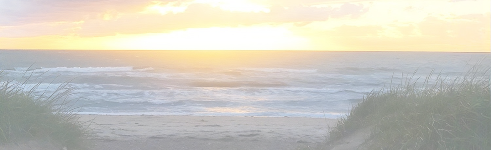
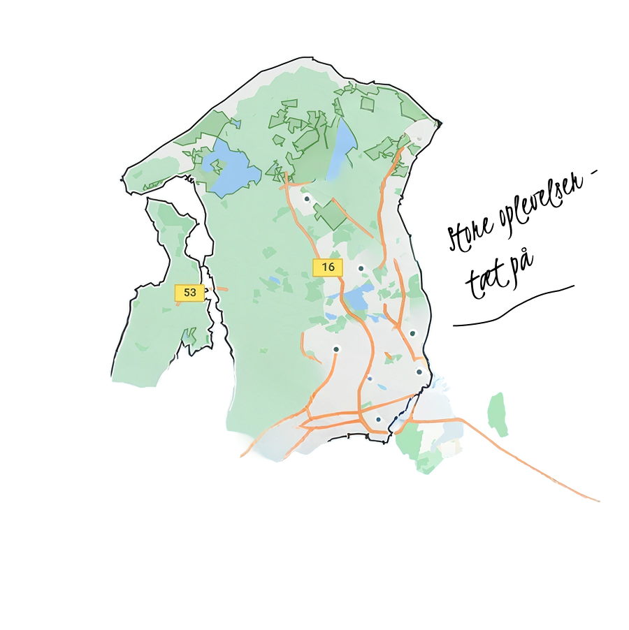
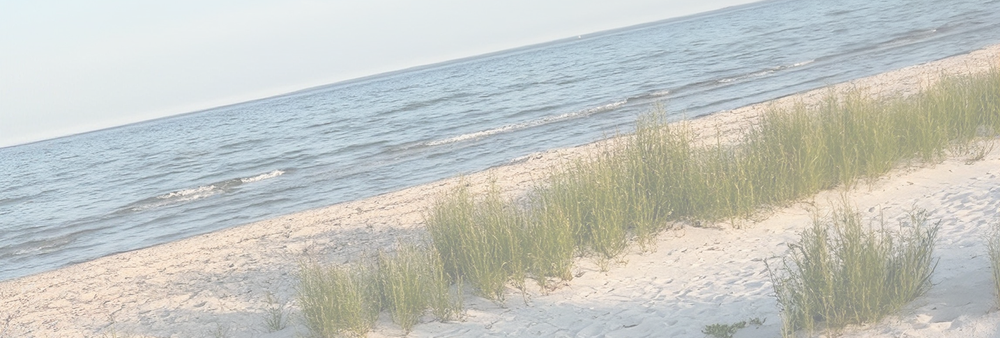
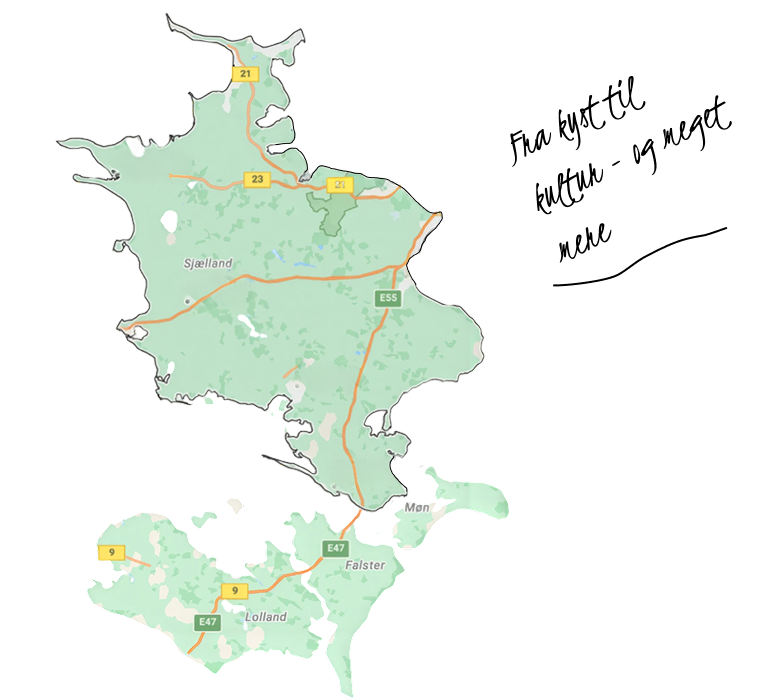
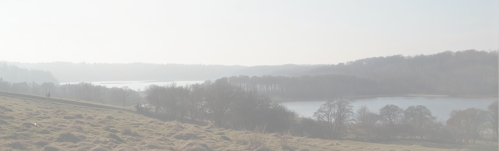
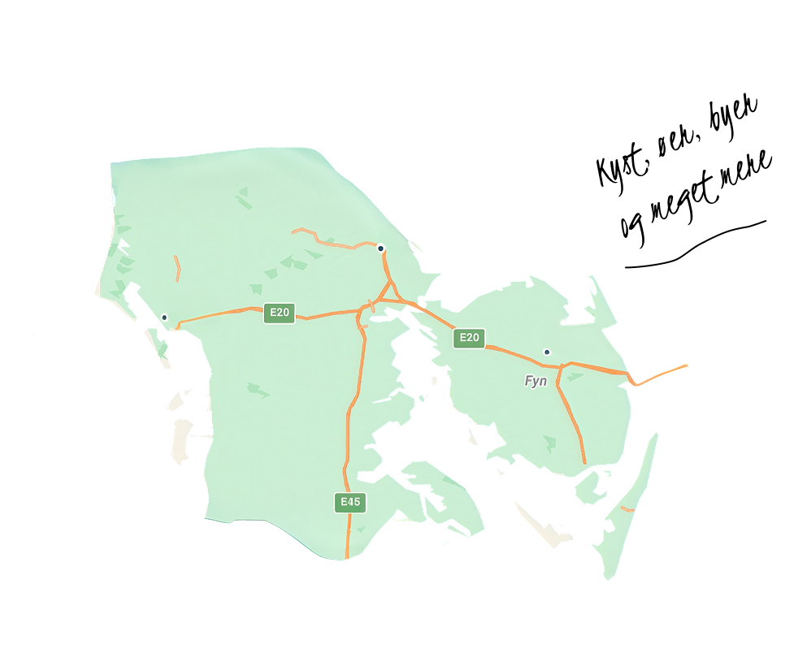
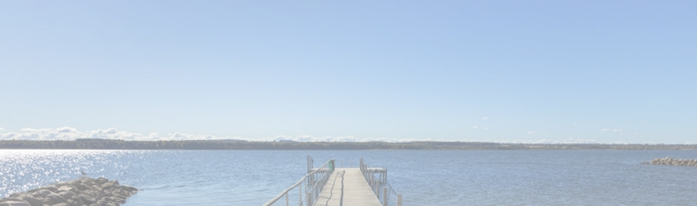
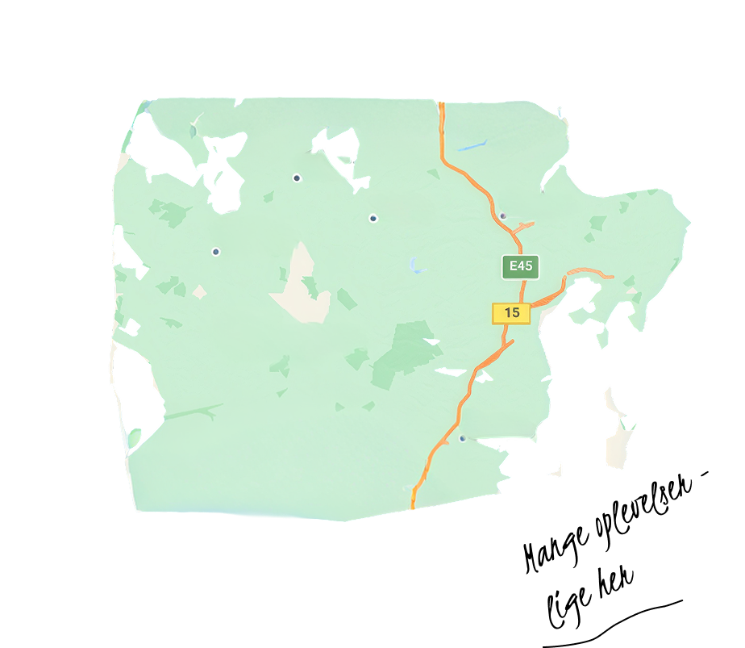
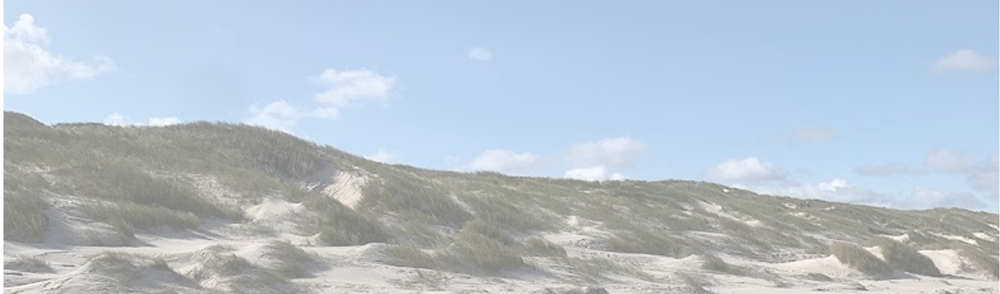
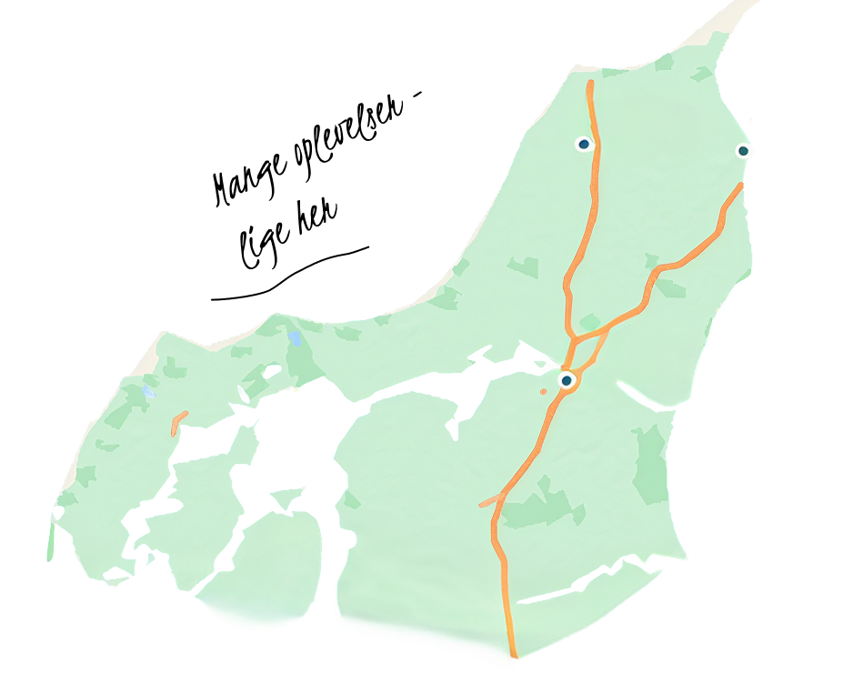

Region Hovedstaden
mellem storbyens puls og naturens ro
Region Hovedstaden samler det bedste fra to verdener. Københavns levende gader, Nordsjællands grønne landskaber og kystens friske luft. Her kan en dag være fyldt med kultur og byliv og den næste med skov, strand og ro.
Byen lige udenfor døren
Caféer, shopping, arkitektur, musik og kulturoplevelser skaber liv året rundt.

Langs kysten
Strande, havne og kyststrækninger giver mulighed for at sænke tempoet og nyde vandet.
Grønne pauser
Skove, parker og naturområder giver et pusterum fra storbyens travlhed.
Historien lever
Slotte, gamle bymiljøer og historiske steder gemmer på fortællinger fra både fortid og nutid.

Oplevelser hele året
Hver sæson har sin charme i Region Hovedstaden. Her er nogle idéer til, hvad du kan opleve året rundt.
Forår
Blomstrende parker og udendørs events
Sommer
Strande, havnemiljøer og lange lyse aftener
 Efterår
Efterår
Farverige skove og kulturnætter
Vinter
Juleopvisninger, museer, og hyggelige bymiljøer
Sådan kommer du frem
Tog, bus, metro og cykel gør det nemt at udforske regionen.
Overnatning
Fra hoteller og kroer til sommerhuse og camping.
Mad og drikke
Alt fra gadekøkkener og caféer til michelin restauranter.
 Godt at vide
Godt at vide
Find praktiske tips, kort og informationer til din tur.

Region Sjælland
Mellem kyst, klinter og kongelig historie
Region Sjælland byder på et roligere tempo med havet som nærmeste nabo. Her møder du dramatiske klinter, grønne landskaber, historiske købstæder og små steder, hvor lokale oplevelser får lov til at fylde.
plads til at trække vejret
Skove, åbne landskaber og stille omgivelser giver rum til ro og fordybelse.
Natur med kant
Klinter, kyster og hav skaber nogle af regionens mest karakteristiske landskaber.
Historie omkring hvert hjørne
Slotte, kirker, middelalderbyer og fortællinger fra Danmarks historie.
Smag på det lokale
Gårdbutikker, lokale råvarer og små spisesteder bringer dig tættere på området.

Oplevelser hele året
Hver sæson åbner for nye sider af Region Sjælland. Fra øjeblikke ved kysten til lokale traditioner og oplevelser i det fri.
Forår
Blomstrende haver, fugleliv og de første ture langs kysten
Sommer
Ø-hop, kajakture, udendørs madavning og afenener ved vandet.
Efterår
Svampeture, høstoplevelser, lokale markeder og naturens farveskift.
Vinter
Vinterbadning, stjernekiggeri, slotte og hyggelige kulturelle oplevelser.
Sådan kommer du frem
Tog, bus, metro og cykel gør det nemt at udforske regionen.
Overnatning
Vælg mellem sommerhus, hotel, camping, B&B og mindre overnatningssteder tæt på naturen.
Mad og drikke
Oplev lokale producenter, gårdbutikker, fisk, sæsonens råvarer og restauranter med fokus på lokale smage.
Godt at vide
Mange naturområder kan opleves frit, mens enkelte attraktioner og aktiviteter har sæsonbestemte åbningstider.

Region Sydddanmark
Mellem øhav, kyst og kultur
Region Syddanmark er fyldt med kontraster fra Vadehavets åbne landskaber og det sydfynske øhav til hyggelige købstæder og levende kulturliv. Her er der plads til både store oplevelser, lokale smage og de stille stunder, hvor man bare kan være.
Ø-liv og eventyr
Tag på øhop, oplev små øsamfund og mærk livet tæt på havet.
 Kysten kalder
Kysten kalder
Lange strande, havne og rå kystlandskaber giver mulighed for både ro og aktivitet.
Smag på området
Lokale råvarer, hyggelige spisesteder og specialiteter med rødder i det sydlige Danmark.
Historie med nærvær
Gamle købstæder, slotte og lokale fortællinger giver regionen sin helt egen stemning.

Oplevelser hele året
Hver årstid giver Region Syddanmark sin egen stemning fra øhavets sommerliv til efterårets ro og vinterens hyggelige oplevelser.
Forår
Cykelture, blomstrende landskaber, fugleliv og de første dage udendørs.
Sommer
Ø-hop, strandture, sejlture og lange aftener langs kysten.
Efterår
Vandreture, lokale høstoplevelser, kunsthåndværk og naturens farver.
Vinter
Historiske oplevelser, hyggelige bymiljøer, lokale madoplevelser og tid til fordybelse.
Sådan kommer du frem
Tog, bus, bil, cykel og færger gør det muligt at komme rundt mellem fastlandet og øerne.
Overnatning
Vælg mellem badehoteller, sommerhuse, camping, B&B og mindre steder med lokal atmosfære.
Mad og drikke
Smag på lokale råvarer, fynske specialiteter, friskfanget fisk og sønderjyske traditioner.
Godt at vide
Tjek færgetider, åbningstider og sæsonens aktiviteter, når du planlægger din tur.

Region Midtjylland
Mellem søer, skove og storbyliv
Midtjylland spænder bredt fra de rolige sølandskaber og dybe skove, til vestkystens åbne horisont og Aarhus' pulserende byliv. Her kan du både søge ud i naturen, opleve kunst og kultur eller finde små pauser væk fra hverdagen.
Liv ved vandet
Søer, fjorde og vestkystens rå landskab indbyder til ro, frisk luft og eventyr.
Ud og være aktiv
Cykling, vandring, og udendørs oplevelser giver mulighed for at opleve landskabet helt tæt på.
 Kreativitet og storby
Kreativitet og storby
Kunst, arkitektur, musik og byliv mødes i Aarhus og regionens mange kultursteder.
Det gode liv
Små byer, lokale råvarer, gårdbutikker og hyggelige steder skaber plads til nærvær og langsomme dage.

Oplevelser hele året
Region Midtjylland byder på forskellige oplevelser året rundt fra aktive dage i naturen til kulturelle oplevelser og hyggelige stunder.
Forår
Vandreture, cykelture, blomstrende landskaber og de første udendørs aktiviteter.
Sommer
Badeture, sejlture, friluftsliv og lange dage med plads til eventyr.
Efterår
Skovens farver, hyggelige udflugter, lokale smagsoplevelser og kulturelle aktiviteter.
Vinter
Museer, kunst, cafébesøg, vinterture og rolige dage med tid til fordybelse.
Sådan kommer du frem
Tog, bus, bil og cykel giver gode muligheder for at komme rundt i regionen.
Overnatning
Find alt fra hoteller og ferieboliger til camping og hyggelige steder tæt på naturen.
Mad og drikke
Oplev lokale råvarer, gårdbutikker, caféer og restauranter med forskellige smagsoplevelser.
Godt at vide
Planlæg efter sæsonen, og tjek åbningstider og praktiske forhold, inden du tager afsted.

Region Nordjylland
Mellem hav, vidder og nordjysk charme
I Nordjylland er naturen aldrig langt væk. Her møder du åbne landskaber, lange kyster og små hyggelige byer, hvor tempoet kan sænkes, og oplevelserne får lov til at fylde.
Mærk havets kræfter
Vesterhavets vind, bølger og brede strande skaber en helt særlig stemning.
Sommer ved kysten
Badeture, havneliv og lange dage under åben himmel inviterer til afslapning og nærvær.
Små fund og store udsigter
Oplev klitter, naturstier og landskaber, der hele tiden ændrer sig med vejret og lyset.
Nordjysk nærvær
Hyggelige bymiljøer, lokale traditioner og gode madoplevelser giver plads til at nyde det enkle.

Oplevelser hele året
I Region Nordjylland følger oplevelserne årets rytme fra havets liv om sommeren til naturens ro og hyggelige stunder i de køligere måneder.
Forår
Vandreture langs kysten, fugleliv, blomstrende natur og de første udflugter i det fri.
Sommer
Strandliv, sejlture, cykling og lange dage med hav, sol og frisk luft.
Efterår
Vandring i klitlandskaber, lokale råvarer, kunsthåndværk og hyggelige ture.
Vinter
Vinterbadning, museumsbesøg, gode madoplevelser og rolige dage tæt på havet.
Sådan kommer du frem
Tog, bus, bil, cykel og færger forbinder de større byer, kystområder og øer.
Overnatning
Vælg mellem feriecentre, hoteller, sommerhuse, camping og mindre overnatningssteder.
Mad og drikke
Smag på nordjyske råvarer, frisk fisk, lokale specialiteter og hyggelige spisesteder.
Godt at vide
Vejret ved kysten kan skifte hurtigt, så tjek forholdene og åbningstiderne, inden du tager afsted.